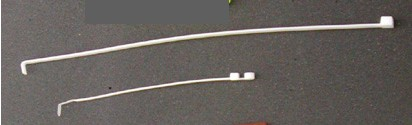

| NOTE: | See illustration for examples of two sizes of ty-wraps. The longer ty-wrap works better than the shorter one, since the thicker ty-wrap does not bend as easily during use. You may need to cut off the rounded end to have a flat scraping surface. |
Illustration 1: Ty-Wraps
